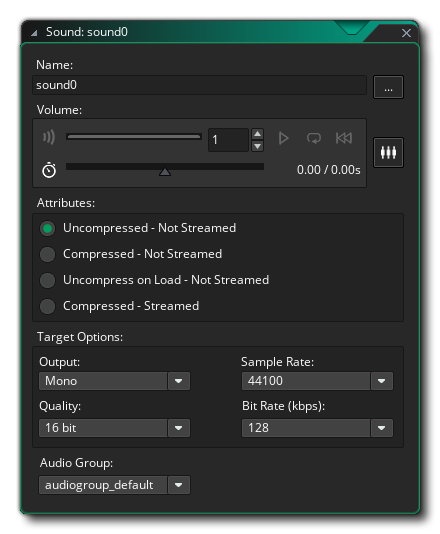
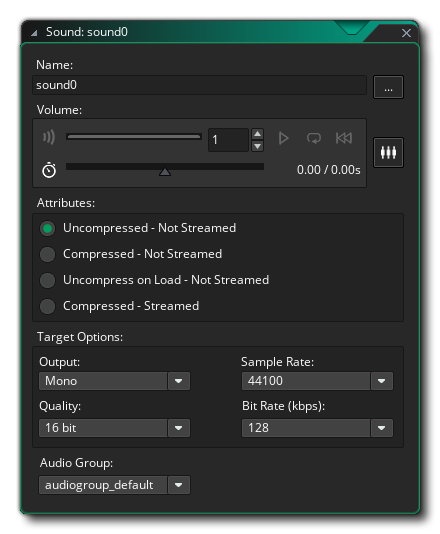

Now we'll create an object for the player to control, and in this case it's going to be a "bat" that will be used to bounce the ball back up the screen. For this, you need to:
- Create a new object (use the right mouse button
 on the Objects resource and select "Create Object")
on the Objects resource and select "Create Object") - Name the object "obj_Bat"
- Assign the object the sprite "spr_Bat" (click the button with "No Sprite" and select "spr_Bat" from the asset manager)
- Add a Create Event (click the Add Event button and select Create)
The Create event you've just added should contain the following code:
/// @description Init Vars
spd = 7; // the base movement speed
This object will also need a Step Event to check for keyboard input. Note that there are actually three types of step event: the Begin, the Step and the End events. You'll mostly use the main Step event for your game logic (the others are handy for games that require a more precise order of execution than our "BreakThrough" game), so go ahead and add that event that now and give it the following code:
/// @description Move
if keyboard_check(vk_left) // Check for the left arrow key being held down
{
// This check is to make sure the bat doesn't go out of the room to the left
if x > sprite_get_xoffset(sprite_index) + spd
{
x -= spd; // Move the bat
}
else
{
x = sprite_get_xoffset(sprite_index); // Clamp the bat to the leftmost side
}
}
if keyboard_check(vk_right) // Check for the right arrow key being held down
{
// This check is to make sure the bat doesn't go out of the room to the right
if x < room_width - sprite_get_xoffset(sprite_index) - spd
{
x += spd;
}
else
{
x = room_width - sprite_get_xoffset(sprite_index);
}
}
// Move the ball object with the bat if the ball isn't moving yet
with (obj_Ball)
{
if !go x = other.x;
}
Here we poll the keyboard for the left and right arrow keys and if one is held down we move the player left or right accordingly, all the while maintaining the bat within the room boundaries. Note that at the end of the code block, we call a couple of lines of code that will have the ball object "stick" to the player object when it's not moving. This means that at the start of the game the player can position the ball before pressing "space".
That last bit of code targets the ball object, but we haven't actually got one yet! However, before we add that, let's take a moment to add a few sound effects to our game...
We're going to add three sounds: a bounce sound, a break sound and a button sound. To start with, go to the resource tree and right click  the "Sounds" resource and select Create. This will open the Sound Editor:

the "Sounds" resource and select Create. This will open the Sound Editor:

Name the sound "snd_Bounce" and then click file explorer button and browse to an appropriate sound (it should be *.wav format, and you can find example sounds in the "Tutorial Resources" folder that has been created as part of the tutorial in the project directory) then add it. We don't need to change any other settings here, so close this window.
Now create two more sounds and name them "snd_Break" and "snd_Click" and add appropriate sounds for them.
With that done, we can move on to creating the ball object.